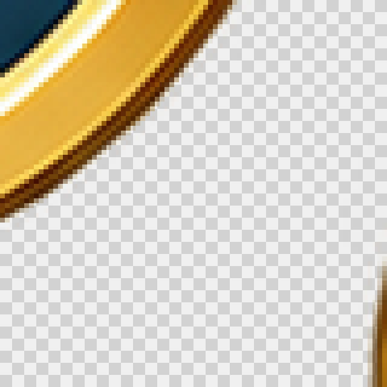

Prueba de logoMis oraciones · sin enlazar, no cambia la app ni tus datos
Aquí puedes ver el logo nuevo puesto en la cabecera, en la bienvenida, en el icono del móvil y en la pestaña del navegador, al lado de lo que hay ahora. Nada de esto se publica en la app hasta que lo apruebes.
Esta página usa su propio icono de pestaña (el favicon nuevo). Si no lo ves, prueba a recargar sin caché. La navegación de la app va primero a la red, así que esta página no debería quedarse con una copia vieja.
1 · CABECERA EN EL MÓVILBarra superior de la app
A la izquierda, lo de ahora (la cruz y el nombre en mayúsculas). A la derecha, la propuesta: el icono nuevo con el nombre escrito en la misma letra de la app (Cormorant Garamond), que cambia de color en modo oscuro.
Actual
✝ MIS ORACIONES
UN MOMENTO PARA TI Y PARA DIOS
Encuentra tu paz. Una oración a la vez.
Lee, escucha y reza a tu ritmo.
Nuevo recomendado
Mis Oraciones
UN MOMENTO PARA TI Y PARA DIOS
Encuentra tu paz. Una oración a la vez.
Lee, escucha y reza a tu ritmo.
El icono va a la izquierda y el nombre se escribe con la letra de la app, en el verde (o el dorado, en modo oscuro). Así no queda un recuadro blanco ni un texto que no se lea.
El archivo cabecera.png, tal cual
Tu cabecera es una imagen: icono + «Mis Oraciones» + una raya dorada. El fondo es transparente, no un recuadro blanco sólido. Aun así, el nombre está pintado en un verde oscuro fijo, pensado para un fondo claro, y en modo oscuro se lee mal (el contraste es de 1,8; para leer bien haría falta 4,5). Por eso, más abajo, en modo oscuro, se ve la diferencia.
UN MOMENTO PARA TI Y PARA DIOS
Encuentra tu paz. Una oración a la vez.
Lee, escucha y reza a tu ritmo.
2 · CABECERA EN EL ORDENADORBarra de navegación
En la web, a partir de un tamaño de pantalla grande, la app muestra esta barra fija arriba, con el nombre a la izquierda y las secciones en el centro.
Actual
✝ MIS ORACIONES
Nuevo recomendado
Mis Oraciones
3 · BIENVENIDALogo completo en la pantalla de inicio
El logo grande, con «ORA · LEE · ESCUCHA · VIVE» y la frase «Un lugar para encontrarte con Dios, cada día», queda muy bien como bienvenida o como una pantalla que aparece al abrir la app. Aquí lo ves en el móvil y, debajo, en una composición de ordenador, junto al texto de inicio que ya está aprobado.
Actual · móvil
✝ MIS ORACIONES
UN MOMENTO PARA TI Y PARA DIOS
Encuentra tu paz. Una oración a la vez.
Lee, escucha y reza a tu ritmo.
Nuevo · móvil
Mis Oraciones
En el móvil el logo ya lleva el nombre y la frase, así que no hace falta repetir el título debajo. Si prefieres conservar «Encuentra tu paz…», se puede dejar el logo un poco más pequeño y el texto a continuación.
Nuevo · ordenador
Mis Oraciones
UN MOMENTO PARA TI Y PARA DIOS
Encuentra tu paz. Una oración a la vez.
Lee, escucha y reza a tu ritmo.
4 · ICONO Y FAVICONPantalla de inicio del móvil y pestaña del navegador
A la izquierda, el icono actual (la cruz dorada sobre el círculo crema). A la derecha, el nuevo: la Virgen orando, con la cruz dorada y el marco de oro. Abajo, cómo se vería la pestaña de la web.
Actual · icono de la app
15:53▮▮▮ 🔋
Teléfono
Mensajes
Mis oraciones
Cámara
Galería
Reloj
Notas
Ajustes
Nuevo · icono de la app
15:53▮▮▮ 🔋
Teléfono
Mensajes
Mis oraciones
Cámara
Galería
Reloj
Notas
Ajustes
Actual · pestaña del navegador
Mis oraciones×
Otra pestaña×
github.io/mis-oraciones
✝ Mis Oraciones
Nuevo · pestaña del navegador
Mis oraciones×
Otra pestaña×
github.io/mis-oraciones
Mis Oraciones
El favicon de 32 px se reconoce bien (el velo azul, las manos y un destello de la cruz). El de 16 px, que es el que usan muchas pestañas, se ve más blando. Mira también la pestaña de esta misma página: ya lleva el favicon nuevo.
Tamaños del favicon, real y ampliado
16 px, tamaño real
16 px, ampliado
32 px, tamaño real
32 px, ampliado
5 · MODO OSCUROCómo queda el logo sobre el fondo de la app
El modo oscuro de la app usa un fondo marrón muy oscuro (#1b1713), letra clara y acentos dorados. Aquí se ve, sin tocar el interruptor de arriba, por qué conviene el nombre escrito en vivo y no la imagen de la cabecera.
Nuevo · icono + texto en vivo
Mis Oraciones
El nombre pasa a un dorado claro, como el resto de la app en modo oscuro. El logo completo se apoya bien sobre el pergamino oscuro.
cabecera.png sobre fondo oscuro
UN MOMENTO PARA TI Y PARA DIOS
Encuentra tu paz. Una oración a la vez.
Lee, escucha y reza a tu ritmo.
El nombre se queda en verde oscuro y casi se funde con el fondo. No es un recuadro blanco, pero el texto no está pensado para este tema. Por eso recomiendo no usar cabecera.png tal cual en la app, y sí usar el icono más el nombre escrito con la letra de la app.
Barra de ordenador, modo oscuro
Mis Oraciones
6 · DETALLES DEL ICONOEsquinas, recortes de Android y un arreglo menor
El icono de 512 px tiene las esquinas superiores y la inferior izquierda transparentes, que es lo que se espera de un icono redondeado. En la esquina inferior derecha queda un resto dorado y el marco se corta un poco: no llega a cerrar el redondeo. En una pantalla de inicio se nota poco; conviene limpiarlo antes de publicarlo.
Fondo de cuadros · se ven las esquinas
Esquina inferior derecha, ampliada

Ese trazo dorado sobresale del recuadro. En tamaños pequeños casi no se ve; al generar el de 192 px y el de 180 px a partir de este archivo, el resto se encoge, pero sigue ahí.
Cómo lo recortaría Android (icono adaptativo)
Android no muestra el archivo tal cual: le aplica una máscara (círculo, squircle o cuadrado redondeado, según el móvil). Como el marco dorado ya viene redondeado y las esquinas son transparentes, al recortar en círculo se pierden las esquinas del marco y puede verse el color de fondo del sistema en los huecos. Para la app haría falta, además, una versión «maskable»: el dibujo a sangre, sin marco recortado de antemano, con lo importante dentro de la zona segura del centro (el 66 %).
Círculo
Squircle
Redondeado
El recuadro rojo es la zona segura de un icono adaptativo. La Virgen y la cruz caben bien dentro; el marco, no siempre.
7 · RECOMENDACIONESQué te propongo, cuando lo veas
Cabecera
No usar cabecera.png como imagen fija: el nombre no cambia de color en modo oscuro y se lee mal.
Sí usar el icono nuevo y escribir «Mis Oraciones» con la letra de la app, que ya se adapta al tema claro y al oscuro.
El archivo de cabecera no tiene un fondo blanco sólido (es transparente), pero el verde del texto está pensado para un fondo claro.
Icono de la app
El dibujo es muy bonito y se distingue bien al lado del actual.
Conviene retocar la esquina inferior derecha (el resto dorado y el marco un poco cortado) antes de subirlo de verdad.
Para Android, además del icono redondeado, hace falta una versión a sangre (maskable), como la que ya tiene la app ahora.
En esta página de prueba ya están el de 192 px (PWA) y el de 180 px (iPhone), generados a partir del de 512. El de iPhone va sobre el mismo fondo marfil de la app, porque iOS rellena de negro las esquinas transparentes.
Logo completo
Queda muy bien en la bienvenida, tanto en claro como en oscuro.
Puede usarse al abrir la app o en la parte de arriba de la pantalla de inicio. En el móvil, si sale grande, yo quitaría el título de debajo para no repetir el nombre.
El archivo pesa unos 1,3 MB. Para la app convendría una copia más ligera (WebP o un PNG más comprimido), sin tocar el original.
Favicon
El de 32 px se reconoce bien en la pestaña.
El de 16 px se ve más blando, como es normal a ese tamaño. Si quieres, se puede hacer una versión más simple solo para 16 px (por ejemplo, solo el velo y la cruz), pero no es imprescindible.
Nada de esto está enlazado desde la app. Cuando me digas qué te gusta, lo preparamos para publicarlo en la web y en el APK, sin perder tus datos y subiendo solo el número de versión.